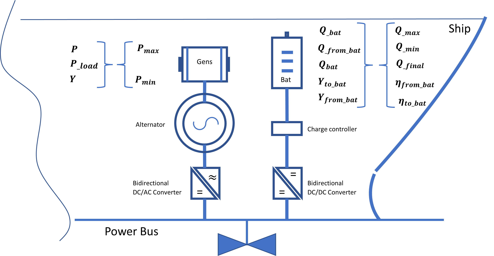

Problem LP constraints¶

Linear programming constraints¶
Linear programming constraints (LP constraints) are the rules that gouverne the problem optimization process. They are fondamentally set of equations, they might be either inequality equations ( example : \({a} + {b} \le {c}\,\)) or equality equations ( example : \({a} + {b} = {c}\,q\)) constructed based on the LP variables quantities and problem parameters. (See. Problem LP variables and Problem LP constraints).
Set of problem LP constraints¶
- \(Load\,requirements :\)
\[\begin{flalign*}
\color{black}
& L_k =P_k^{\mathrm{load}} +\eta {\;}^{\mathrm{fromBat}} {\cdot \;P}_k^{\mathrm{fromBat}} & \forall\,\,\,\,\,\, k=1,\dots ,n
\end{flalign*}\]
- \(Power \, split :\)
\[\begin{flalign*}
& P_{k\;} =P_k^{\mathrm{load}} {+\;P}_k^{\mathrm{toBat}}\ & \forall\,\,\,\,\,\, k=1,\dots ,n
\end{flalign*}\]
- \(Charge \,balance \,constraints :\)
\[\begin{flalign*}
& Q_k =Q_{k-1} +\eta^{\mathrm{toBat}} \cdot \;P_k^{\mathrm{toBat}} \Delta t-\;P_k^{\mathrm{fromBat}} \Delta t\\
& Q_0 =Q_{\mathrm{init}}\\
& Q_n =Q_{\mathrm{final}} & \forall\,\,\,\,\,\, k=1,\dots ,n
\end{flalign*}\]
- \(Genset\, constraints :\)
\[\begin{flalign*}
& P_{k\;} \le {0\ldotp 9P}_{\mathrm{max}\;} {\cdot y}_k & \forall\,\,\,\,\,\, k=1,\dots ,n\\
& P_{k\;} \le {0\ldotp 2P}_{\mathrm{max}\;} {\cdot y}_k\ & \forall\,\,\,\,\,\, k=1,\dots ,n
\end{flalign*}\]
- \(Battery \,logical \,constraints :\)
\[\begin{flalign*}
& y_k^{\mathrm{toBat}} +y_{k\;}^{\mathrm{fromBat}} \le 1 & \forall\,\,\,\,\,\, k=1,\dots ,n\\
& P_k^{\mathrm{toBat}} \le 0\ldotp 9P_{\mathrm{max}} {\cdot y}_k^{\mathrm{toBat}} & \forall\,\,\,\,\,\, k=1,\dots ,n \\
& P_k^{\mathrm{fromBat}} \le 0\ldotp 9P_{\mathrm{max}} {\cdot \;y}_k^{\mathrm{fromBat}} & \forall\,\,\,\,\,\, k=1,\dots ,n
\end{flalign*}\]
- \(Fuel \,consumption :\)
\[\begin{flalign*}
& {FC}_{k\;} ={aP}_{k\;} +b-{fc}_{offset} \cdot \left(1-y_k \right)\ & \forall\,\,\,\,\,\, k=1,\dots ,n
\end{flalign*}\]
- \(Objective \,linearization :\)
\[\begin{flalign*}
& z_k \ge y_k -y_{k-1} & \forall\,\,\,\,\,\, k=2,\dots ,n
\end{flalign*}\]